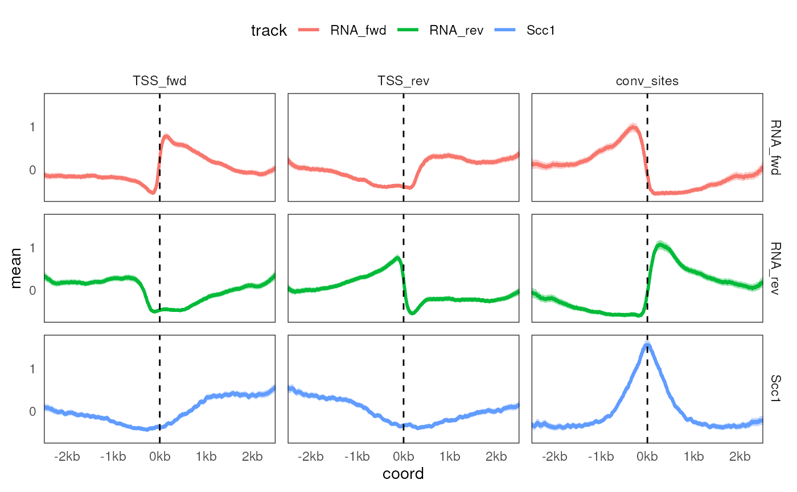
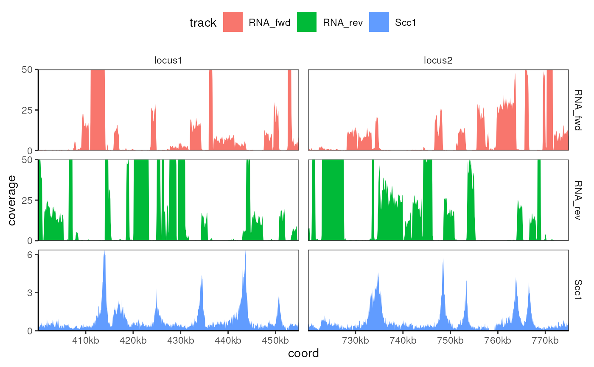

#' @description
Usage
geom_aggrcoverage(
mapping = NULL,
data = NULL,
...,
unit = c("kb", "Mb", "b"),
ci = TRUE,
grid = FALSE,
na.rm = FALSE,
show.legend = NA,
inherit.aes = TRUE
)
geom_coverage(
mapping = NULL,
data = NULL,
...,
type = c("area", "line"),
unit = c("kb", "Mb", "b"),
grid = FALSE,
na.rm = FALSE,
show.legend = NA,
inherit.aes = TRUE
)
scale_y_coverage()
scale_x_genome(unit = c("kb", "Mb", "b"))Arguments
- mapping
Aesthetics for geom_*. By default, no color/fill aesthetic is specified, but they can be assigned to a variable with
mapping = aes(...). Note thatxandyare automatically filled.- data
Data frame passed to geom_*. Typically a
CoverageExperimentobject (expanded to a tibble) or aAggregatedCoverageobject.- ..., na.rm, show.legend, inherit.aes
Argument passed to
ggplotinternal functions- unit
Rounding of x axis (any of c('b', 'kb', 'Mb')).
- ci
Should the confidence interval be plotted by
geom_aggrcoverage()? (default: TRUE)- grid
Should the plot grid by displayed? (default: FALSE).
- type
Choose between "line" and "area" style for
geom_coverage().
Examples
library(rtracklayer)
library(plyranges)
library(ggplot2)
library(purrr)
TSSs_bed <- system.file("extdata", "TSSs.bed", package = "tidyCoverage")
features <- list(
TSS_fwd = import(TSSs_bed) |> filter(strand == '+'),
TSS_rev = import(TSSs_bed) |> filter(strand == '-'),
conv_sites = import(system.file("extdata", "conv_transcription_loci.bed", package = "tidyCoverage"))
)
tracks <- list(
RNA_fwd = system.file("extdata", "RNA.fwd.bw", package = "tidyCoverage"),
RNA_rev = system.file("extdata", "RNA.rev.bw", package = "tidyCoverage"),
Scc1 = system.file("extdata", "Scc1.bw", package = "tidyCoverage")
) |> map(import, as = 'Rle')
ce <- CoverageExperiment(tracks, features, width = 5000, center = TRUE, scale = TRUE)
ac <- aggregate(ce)
#############################################################################
## 1. Plotting aggregated coverage
#############################################################################
ac |>
as_tibble() |>
ggplot() +
geom_aggrcoverage(aes(col = track)) +
facet_grid(track ~ features) +
geom_vline(xintercept = 0, color = 'black', linetype = 'dashed', linewidth = 0.5)

#############################################################################
## 2. Plotting track coverages over individual loci
#############################################################################
ce2 <- CoverageExperiment(
tracks,
GRangesList(list(locus1 = "II:400001-455000", locus2 = "IV:720001-775000")),
window = 50
)
expand(ce2) |>
mutate(coverage = ifelse(track != 'Scc1', scales::oob_squish(coverage, c(0, 50)), coverage)) |>
ggplot() +
geom_coverage(aes(fill = track)) +
facet_grid(track~features, scales = 'free')
